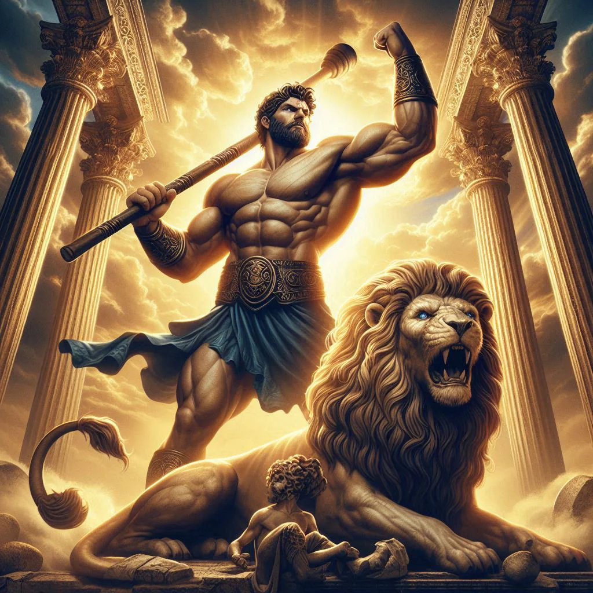
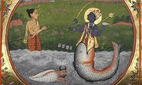
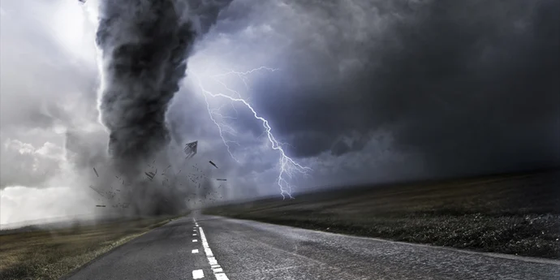
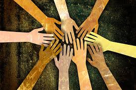
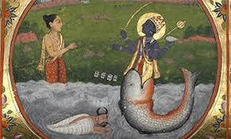
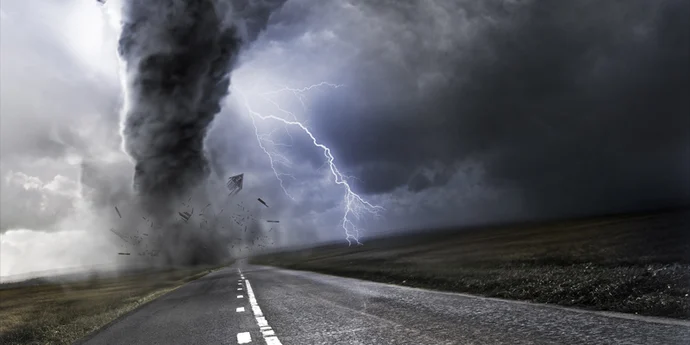
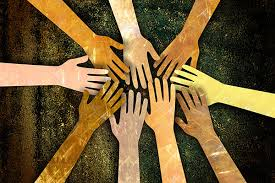

The importance of Mythology:
Mythological stories have been told throughout human history
From well known stories like Ragnarok, a fierce battle where gods fight for the fate of the world, to lesser known stories like The story of Kitsune and the Moon, a story where a fox spirit steals moonlight from the heavens
Each tale reflects the culture of those that make them, showing their values, fears, and goals all told through messages and themes of these stories
Myths have commonly been used to explain natural desasters and events like earth quakes and volcanoes, preserve cultral heritage, and provide comfert during difficult trials
By exploring these stories we can come to a better understanding of other cultures and what it means to be human
 




